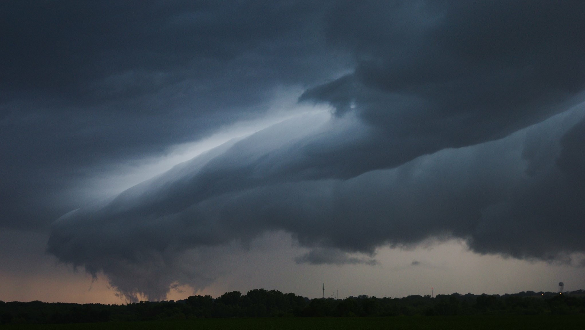

Fairdale, Illinois, April 9, 2015
On the morning of April 9, 2015, I had already knew of the high risk for storms that were going to occur that day. We are normally put in marginal risks, or grater, but never really see much.
After studying the forecast and seeing what all of the models had predicted, I found a target area and stationed myself in the Amboy, IL area. Normally I don't chase alone, but on this day, I had no other choice.
After sitting in Amboy for what felt like days, the storms stared to roll in. I had instinct to jump north to the Pecatonica area as that was where the main severe threat was, but because I hesitated, it was too late and I decided to stay put.
As the line of storms approached in the early evening hours, I followed pursuit to the south. Little did I know there was already a tornado on the ground.
The destruction
As I was following the storm at a greater distance than normal, I had started to notice debris on the ground and some slight destruction. I got extremely excited as I had now realized something was on the ground.
Normally, it would be a smaller EF0 or EF1 tornado, because that's just how northern Illinois works. As I sped up and gained ground on the storm, I started to see what could be a large wedge tornado to my north east.
After observing the structure, and finally realizing it
I was in a 2013 Chevy pickup truck with major modifications that would protect me from some severe storm damage, but it nothing special that would hold up to destruction of a storm this size. Regardless, I was in full attack mode and kept pushing.
After some time, and a lot of damage, my adrenaline started to wear off and I had come to realize just how idiotic and foolish I have been the last thirty plus minutes.
This was the moment that changed my chasing career forever.